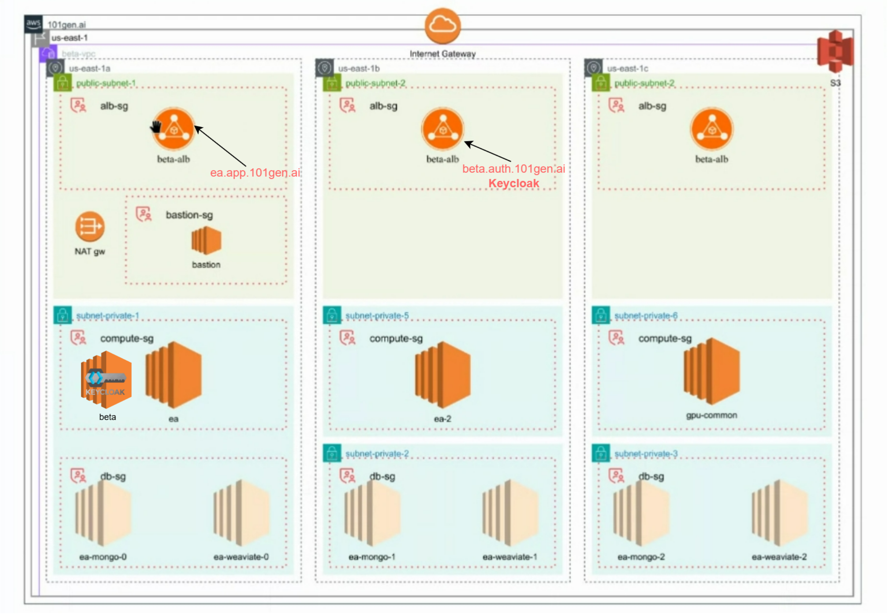

Cloud-native platform
101Gen.ai
Built on AWS, Kubernetes, and EKS — transformed a monolith into scalable microservices, deploying Keycloak, Weaviate, MongoDB, Redis, PostgreSQL, and application workloads across the platform. Centralized error monitoring and operational automation with Python.
- Multi-AZ EKS platform across 3 availability zones with ALB ingress for app and auth traffic
- ~40% faster release cycles after standardizing Docker → ECR → Kubernetes deploy paths
- Centralized metrics/logs cut production triage time with Prometheus, Grafana, and Python automation
Hover or tap to view architecture
